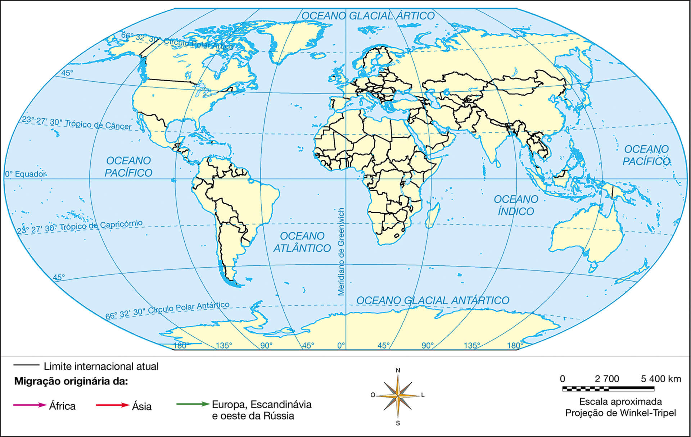

Cartaz de protesto contra a imigração nos EUA: “Protejam meu modo de vida. Parem a imigração ilegal”
Ponto de partida
Por que houve uma mudança tão drástica em relação ao tema imigração? Por que os imigrantes passaram a ser tão hostilizados em alguns países?
Considerando que os estadunidenses são um povo formado basicamente por imigrantes, com que critérios se define o “modo de vida” que teria de ser “protegido”, conforme afirma o cartaz que protesta contra a imigração?
Objetivos da unidade
compreender, entre outros, os conceitos de migração, imigração e emigração, a fim de interpretar melhor a dinâmica demográfica mundial;
identificar os principais fluxos demográficos da atualidade, tendo como comparativo a dinâmica ocorrida no passado para compreender o grau de interferência de tais fluxos na vida das diversas sociedades envolvidas;
avaliar como as atuais tendências migratórias refletem as contradições da globalização na tentativa de interpretar o avanço da xenofobia em nível mundial;
analisar a realidade dos diversos tipos de refugiados para contextualizar melhor as causas e as consequências relacionadas aos deslocamentos humanos que produziram tais situações.
Diferentes tipos de migrações e conceituação básica
É comum haver confusão quanto ao uso dos conceitos relativos às migrações. Além de parecidos, os termos devem ser analisados com base no ponto de vista do observador.
Migração: retrata o deslocamento populacional ocorrido, independentemente de ele apontar a saída ou a entrada de pessoas em determinado território. Algumas fontes recomendam o uso desse conceito especificamente
para retratar os deslocamentos ocorridos dentro de um país (por exemplo, os paranaenses que se estabeleceram em Rondônia na década de 1980 podem ser tratados como “migrantes”), mas é comum que ele seja utilizado também em
deslocamentos internacionais.
Imigração: refere-se à entrada de pessoas de outros lugares que vão habitar determinado país.
Emigração: relaciona-se à saída de pessoas que vão habitar outros países.
Migrar é, muitas vezes, um ato de coragem. Mesmo que motivados por alguma necessidade, os migrantes deixam para trás o lugar conhecido, as pessoas e a cultura com a qual estabeleceram vínculos históricos e buscam o novo sem a certeza
de que se adaptarão a ele.
A dinâmica das sociedades humanas está profundamente ligada às migrações e repleta de histórias envolvendo as sagas vividas pelos migrantes. Apesar de haver aqueles que migram movidos pelo próprio desejo de buscar algo novo, pode-se
afirmar que grande parte das migrações decorre da necessidade de superar situações extremas. Entre seus principais motivadores, estão:
fatores econômicos – abrangem a maioria das migrações ao longo do tempo; migra-se em busca de melhores oportunidades de vida (exemplo: colonos italianos que vieram para o Brasil no fim do século XIX);
fatores naturais – migra-se porque o local de habitação, em virtude de algum desastre natural (seca, inundação, furacão, terremoto, erupção vulcânica, etc.), tornou-se adverso para a sobrevivência (exemplo: haitianos que vieram
para o Brasil após o terremoto de 2010);
fatores sociopolíticos – migra-se para escapar de algum tipo de perseguição política ou social (exemplo: judeus europeus que emigraram para países da América antes da Segunda Guerra Mundial e durante esse período para fugir do
nazismo).
Geografias literárias
Merica, Merica
Dalla Italia noi siamo partiti
Siamo partiti col nostro onore
Trentasei giorni di macchina e vapore
e nella Merica noi siamo arriva’
Merica, Merica, Merica
cossa saràlo ‘sta Merica?
Merica, Merica, Merica
un bel mazzolino di fior.
E alla Merica noi siamo arrivati
no’ abbiam trovato nè paglia e nè fieno
Abbiam dormito sul nudo terreno
come le bestie andiam riposar
América, América
Da Itália nós partimos,
Partimos com a nossa honra
Trinta e seis dias de carro e navio
E na América chegamos
América, América, América
Que coisa será esta América?
América, América, América
É um lindo ramalhete de flores
Na América nós chegamos
Não encontramos nem palha nem feno
Dormimos sobre o duro terreno
Como os animais, repousamos
MORELENBAUM, Jacques. Merica, Merica. Intérprete: Caetano Veloso. In: O quatrilho. Rio de Janeiro: Natasha Records, 1995. 1 CD, digital estéreo. Faixa 1.
Arquivo histórico municipal de Bento Gonçalves/Historiadora Assunta de Paris
Cartaz do século XIX promove a imigração para o Brasil: “Venham construir os seus sonhos com a família. Um país de oportunidade. Clima tropical e abundância. Riquezas minerais. No Brasil vocês poderão ter o seu castelo. O
governo dá terras e utensílios a todos”.
Entre 1870 e 1930, milhares de italianos vieram para o Brasil, estabelecendo-se especialmente nas regiões Sul e Sudeste. Diante das expectativas expostas no cartaz e com base em pesquisas sobre a migração italiana no Brasil, responda
às perguntas: O Brasil representou, de fato, um “país de oportunidades” para os italianos? Você diria que a dura realidade vivida por eles, retratada na letra da canção folclórica, foi compensada com a atual situação de vida de muitos
descendentes de italianos que vivem no país?
As migrações também podem ser classificadas em:
espontâneas – mesmo quando motivadas por fatores determinantes diversos; afinal, a decisão de deixar o local de origem é, em última instância, do próprio migrante;
forçadas – quando a pessoa é obrigada a deixar o local em que vive contra sua vontade, como em casos de escravidão ou exílio político involuntário;
controladas – quando resultam da política de determinado governo, que regula os fluxos de entrada e saída do território nacional por meio de restrições ou estímulos.
Milhões de africanos foram trazidos à América como escravizados, entre os séculos XVI e XIX, no maior movimento migratório forçado da história.
FERREZ, Marc. Escravos em terreiro, vale do Paraíba. 1882. 1 fotografia, p & b. Rio de Janeiro. Coleção Gilberto Ferrez. Instituto Moreira Salles.
Espaços de repulsão e de atração
Movimentos migratórios devem ser analisados com base na atuação conjunta de duas forças complementares: a de repulsão e a de atração. Se o migrante decidiu abandonar o local em que vive, é preciso identificar os motivos que o
convenceram de que aquele determinado lugar já não reúne as condições consideradas adequadas para sua residência. Sem essas condições, o espaço passa a ser de repulsão. Em outras palavras, é necessário buscar compreender por que o
migrante resolveu abandonar o local onde vivia.
Após a decisão de abandonar o espaço de repulsão, o migrante tem um leque de opções de lugares para onde ele poderia ir. Alguns fatores, no entanto, o farão decidir por determinado local, considerado mais atrativo que os outros. Assim,
compreender o espaço de atração significa identificar as razões pelas quais determinado lugar representa, no imaginário do migrante, a melhor opção para estabelecer sua nova moradia.
Dinâmica dos fluxos migratórios
Em um passado não muito remoto, o maior espaço de repulsão mundial era a Europa. Durante o Período Colonial, milhares de famílias europeias deixaram para trás a turbulência socioeconômica e as guerras do Velho Mundo, buscando
oportunidades de prosperidade e tranquilidade nas colônias do além-mar. Dessa forma, estabeleceram-se inicialmente na América (entre os séculos XVI e XIX) e posteriormente na África, na Ásia e na Oceania (século XIX e primeira metade do
século XX).
O restante do mundo configurava, portanto, espaço de atração para muitos dos emigrantes europeus. Essa expansão representou, simultaneamente, a mundialização da cultura europeia – muitas vezes, sobrepondo-se às tradições nativas dos
locais onde aportavam. Observe, no mapa, como a Europa configurou-se como o mais importante ponto de partida das emigrações mundiais durante várrios séculos.
PRINCIPAIS FLUXOS MIGRATÓRIOS INTERNACIONAIS (1500-1914)

Mariane Félix da Rocha
Fonte: ATLAS of world history. Londres: Philip’s, 2007. p. 211. Adaptação.
Na primeira metade do século XX, esse cenário começou a mudar. Inicialmente, com a Primeira Guerra Mundial (1914-1918), que, por um lado, gerou milhares de refugiados durante o conflito e, por outro, criou oportunidades de trabalho na
reconstrução do continente após a guerra, inibindo as emigrações de europeus. A estagnação econômica global motivada pela Crise de 1929 também contribuiu para que as emigrações de famílias europeias consolidassem a tendência de declínio
(já manifestada na década anterior) e praticamente cessassem.
No entanto, foi após a Segunda Guerra Mundial que o sentido dos fluxos migratórios mundiais envolvendo a Europa se inverteu completamente. Para compreender esse fenômeno, é preciso considerar que:
apesar de a guerra ser “mundial”, o cenário principal dos conflitos foi a Europa; portanto, após a guerra, em 1945, era naquele continente que havia a maior demanda por reconstrução;
apesar de ter atingido pessoas de diversos países não europeus, pode-se contabilizar que a maioria das 50 milhões de vítimas fatais do conflito era de europeus (somente de cidadãos soviéticos morreram mais de 10 milhões durante a
guerra), sem contar os feridos e mutilados. Embora também tenham morrido crianças, adolescentes e idosos, a maior quantidade de vítimas era de adultos do sexo masculino em idade produtiva, ou seja, a guerra afetou profundamente o
mercado de trabalho europeu e, quando ela acabou, havia enorme carência de força de trabalho para a reconstrução;
logo após o fim da Segunda Guerra Mundial, o mundo mergulhou na Guerra Fria; havia o temor ocidental de que o comunismo se alastrasse por uma Europa destruída e em forte crise. Para evitar essa tendência, os EUA elaboraram o Plano
Marshall, que destinou bilhões de dólares para a rápida reconstrução do continente. No entanto, o dinheiro por si só não reconstruía pontes, estradas, hospitais, centrais elétricas, etc. Era necessária mão de obra, e havia enorme
carência desta;
LatinStock/Corbis/dpa/Deutsche Fotothek
Getty Images/UIG/Sovfoto
Walcheren, nos Países Baixos, após bombardeio de diques durante a Segunda Guerra Mundial (imagem A) e, no início da década de 1950, sendo reconstruída com recursos do Plano Marshall (imagem B).
a solução encontrada pelos países europeus foi adotar políticas de incentivo à imigração, atraindo famílias de suas colônias africanas e asiáticas (que entrariam, nessa época, em fase de descolonização) e até das ex-colônias
americanas. Países, como a Alemanha, que não tinham colônias expressivas buscaram outras alternativas. O governo alemão passou a incentivar a vinda de turcos, por exemplo.
ORIGEM DOS MAIORES EFETIVOS DE IMIGRANTES QUE AUXILIARAM A RECONSTRUÇÃO DE ALGUNS DOS PRINCIPAIS PAÍSES EUROPEUS APÓS A SEGUNDA GUERRA MUNDIAL
País de destino
Povos que imigraram
Justificativa
Reino Unido
Indianos e paquistaneses
Habitavam a maior ex-colônia britânica (independente em 1947).
França
Árabes da região do Magreb (ver mapa da tela 45)
Habitavam a maior colônia francesa/proximidade geográfica.
Itália
Líbios e outros árabes
Habitavam uma das poucas ex-colônias italianas/proximidade geográfica.
Alemanha
Turcos
A Turquia era um dos países mais próximos a reunir as seguintes características:
era capitalista e menos desenvolvida que a Alemanha;
não havia sido colônia de nenhuma potência europeia;
tinha excedente populacional.
Além das emigrações europeias, destacam-se importantes correntes migratórias ocorridas naquele período:
a de chineses para Filipinas, Indonésia e, principalmente, costa oeste dos EUA;
a de indianos para a África do Sul;
a “russificação” dos territórios da Ásia Central à medida que ocorria a expansão territorial do Império Russo;
a emigração forçada de africanos trazidos para trabalhar como escravos na América.
MAGREB
Mariane Félix da Rocha
Fonte: IBGE. Atlas geográfico escolar. 6. ed. Rio de Janeiro, 2012. p. 45. Adaptação
No caso do Brasil, vale destacar, ainda, a imigração japonesa ocorrida nas primeiras décadas do século XX, a última das grandes correntes migratórias recebidas pelo país quando este ainda figurava como um importante espaço de atração
mundial.
Empresa Brasileira de Correios e Telégrafos
Selo comemorativo do centenário da imigração japonesa no Brasil. O primeiro navio com imigrantes japoneses aportou em Santos em junho de 1908.
Embora os fluxos migratórios internacionais envolvendo a Europa tenham se invertido completamente na segunda metade do século XX, é importante verificar que alguns espaços de atração que já existiam se mantiveram, continuando a
influenciar o sentido das migrações. É o caso, por exemplo, dos EUA, que, desde o Período Colonial, constituem um dos principais destinos para emigrantes mundiais.
Tendências migratórias mundiais da atualidade
Nas últimas décadas, tem se verificado um aumento dos fluxos migratórios em nível mundial. Migra-se mais, porém o principal motivo continua sendo o mesmo de outros tempos: o desejo de melhores condições de vida. A maioria das migrações
da atualidade é motivada pela busca de emprego e de melhores possibilidades de obter sustento.
Em 2013, o número de migrantes internacionais no planeta atingiu 232 milhões, registrando um aumento de 33% em relação a 2000.
Em 2013, 71 milhões de migrantes internacionais, ou seja, 74% do total de imigrantes, tinham entre 20 e 64 anos, ou seja, estavam em idade produtiva.
O mapa e o gráfico apresentam os países que concentram os maiores valores absolutos de migrantes.
NÚMERO DE MIGRANTES INTERNACIONAIS (2013)
Mariane Félix da Rocha
Fonte: UNITED NATIONS. International migration 2013. Disponível em: <http://www.un.org/en/development/desa/population/migration/publications/wallchart/docs/wallchart2013.pdf>. Acesso em: 5 dez. 2014. Adaptação.
Países com maior número de migrantes internacionais, em milhões (2000 e 2013)
Fonte: UNITED NATIONS. International migration 2013. Disponível em: <http://www.un.org/en/development/desa/population/migration/publications/wallchart/docs/wallchart2013.pdf>. Acesso em: 5 dez. 2014.
No entanto, parece haver uma diferença crucial entre o cenário atual e outros que o antecederam: atualmente, não há garantias de que o emigrante encontre, de fato, uma terra de grandes oportunidades nos espaços que o atraem. Muitas
vezes, a realidade mostra-se completamente oposta a essa expectativa.
Na interpretação dos fluxos migratórios da atualidade, devem ser consideradas algumas características fundamentais:
a globalização, por aproximar os povos e “encurtar” as distâncias (seja pelo avanço da informação e da comunicação, seja pela evolução e pelo barateamento dos meios de transporte intercontinental), facilita as migrações – se as
empresas, a informação e o dinheiro circulam mais facilmente no mundo global, isso também se aplica às pessoas;
o principal espaço de atração das últimas décadas tem sido o mundo rico, com destaque para os EUA e a União Europeia – embora outros países ricos, como Japão e Austrália, também estejam sendo obrigados a monitorar suas fronteiras
para impedir a imigração excessiva;
Imigrantes ilegais desabrigados nas ruas de Londres: muitas vezes, o sonho de melhorar as condições de vida não termina bem.
Glowimages/eyevine/Evening Standard
PRINCIPAIS FLUXOS MIGRATÓRIOS INTERNACIONAIS (2013)
tanto os espaços de repulsão quanto os de atração, contudo, são afetados pelo contexto do desemprego.
Atividades
Preencha o quadro selecionando três fluxos migratórios apresentados no mapa anterior e descrevendo as razões que justificam os espaços de atração e de repulsão relacionados a cada um deles.
Fluxo migratório
Espaços de atração e de repulsão envolvidos (justificativa)
No mundo globalizado, o mercado de trabalho é muito complexo. Conforme o local ou o nicho profissional, pode haver falta ou excesso de trabalhadores. Em muitas situações, a falta de qualificação exclui boa parte dos pretendentes a um
emprego. Dessa forma, o desemprego coexiste com a carência de mão de obra especializada.
Migração de cérebros
O mercado de trabalho disputa acirradamente a mão de obra qualificada disponível, indo buscá-la onde ela estiver sendo formada, inclusive nos países periféricos. Atraídos pela segurança relacionada às condições favoráveis de moradia e
emprego, muitos trabalhadores deixam seus países de origem e vão morar e trabalhar nos locais determinados pela empresa que os contrata – geralmente nos países centrais ou em regiões estratégicas do mundo periférico. Esse fenômeno
recebe a denominação de migração de cérebros.
Esses trabalhadores, oriundos de países com condições de vida inferiores, aproveitam a oportunidade que lhes é oferecida sem fazer grandes exigências, beneficiando as empresas, que, normalmente, lhes pagam salários menores aos pagos a
funcionários nativos com o mesmo nível de formação.
Geralmente, essa operação constitui um expressivo ganho no custo-benefício para as empresas, já que o “cérebro imigrante” faz o que o trabalhador nativo fazia – muitas vezes, com mais motivação e dedicação –, custa menos e faz menos
exigências. Isso, em muitos casos, leva o imigrante a ter vantagem na concorrência por determinados tipos de emprego em relação ao trabalhador local.
Conexões
A migração de cérebros, no entanto, gera diversos efeitos colaterais. Leia o texto a seguir sobre os problemas vividos por países africanos em virtude do êxodo de profissionais da área de saúde.
A África enfrenta o êxodo de médicos
Num continente já afligido por epidemias e empobrecimento, os sistemas públicos de saúde sofrem mais uma ameaça: a sedução de seus médicos, formados com enorme custo social, por hospitais do mundo rico. [...]
A cada ano 20 mil profissionais da área de saúde (médicos, enfermeiras, parteiras, etc.) emigram da África para a Europa ou América do Norte. Há mais médicos do Benim na França do que no Benim. Portanto, levando-se em conta a
desastrosa situação sanitária do continente, estima-se que seria necessário formar até 2015 um milhão de profissionais da saúde para [que] sejam atingidos os objetivos do milênio para o desenvolvimento (OMD).
[...]
O recrutamento internacional parece uma solução simples e de baixo custo para enfrentar essa penúria. Indo buscar pessoal na África, os países ricos economizam o custo de formação, dez vezes superior àquele praticado no continente
negro. Outra vantagem: muito mais flexíveis, esses profissionais se mostram mais dispostos a trabalhar durante a noite ou fazer horas extras. Mas, reciprocamente, essa migração qualificada representa uma perda de investimento para
os países de origem desses profissionais, sem contar os efeitos negativos sobre a economia e a sociedade. Desse modo, Gana pode ter perdido 50 milhões de euros na formação de pessoal da área de saúde que emigrou pouco depois da
graduação.
[...]
PRINCIPAIS LOCAIS COM CARÊNCIA DE PROFISSIONAIS DE SAÚDE NO MUNDO (2006)
Mariane Félix da Rocha
Fonte: WORLD HEALTH ORGANIZATION. The world health report 2006: working together for health. Disponível em: <http://www.who.int/whr/2006/whr06_en.pdf>. Acesso em: 15 maio 2015. Adaptação.
As agências de recrutamento, mas da mesma forma as redes da diáspora, podem assim atrair facilmente os profissionais do continente para os novos paraísos do trabalho. Deixando o campo pela cidade e o setor público pelo privado, os
profissionais da saúde buscam perspectivas de emprego e melhores condições de vida para si e suas famílias.
Para a África, a fuga de cérebros tem consequências desastrosas: duas crianças a cada três morrem de doenças que poderiam ser facilmente tratadas ou prevenidas. No Zimbábue, restam somente 360 dos 1 200 médicos formados na década
de 1990. Entre 1993 e 2002, Gana perdeu 600 de 800. Dois terços dos que emigraram trabalham na Europa ou nos Estados Unidos. Concomitante a esse êxodo, a taxa de mortalidade infantil é de 1 para 10 em Gana, contra 1 para 200 na
França, dispondo Gana de 9 médicos para cada 100 mil habitantes contra, na França, 335 para 100 mil. [...]
BLANCHET, Karl; KEITH, Regina. A África enfrenta o êxodo de médicos. Disponível em: <https://www.diplomatique.org.br/acervo.php?id=1892>. Acesso em: 3 nov. 2014.
Como impedir os prejuízos trazidos a alguns países pela internacionalização do mercado de trabalho e a migração de cérebros? De que forma seria possível regulamentar as prioridades evitando distorções como a apresentada no texto?
Apesar de o mundo desenvolvido constituir o principal espaço de atração nos fluxos migratórios internacionais da atualidade, os últimos anos têm revelado alterações nesse cenário. Ainda é prematuro afirmar que isso indique uma nova
inversão no sentido das migrações internacionais, porém os anos pós-crise de 2008 fizeram muitos profissionais qualificados deixarem os países ricos em que viviam para buscar emprego em países emergentes, inclusive no Brasil.
Nesse novo cenário, o destaque é para o aumento das emigrações de trabalhadores europeus. Após a crise de 2008, os índices de desemprego se tornaram alarmantes no mercado de trabalho europeu – particularmente em países como Espanha,
Portugal, Irlanda e Grécia, sem excluir os economicamente mais fortes que também foram afetados. A carência de mão de obra especializada, somada à atuação cada vez mais internacionalizada das empresas, tem motivado alguns desses
profissionais a buscar ocupação em países emergentes, como Brasil, Rússia, Índia e África do Sul.
Migração de cérebros no Brasil
No caso específico do Brasil, a ocorrência de grandes eventos esportivos, como a Copa do Mundo de 2014 e as Olimpíadas de 2016, também elevou a visibilidade do país no exterior e gerou novas oportunidades de negócios. A presença de
profissionais qualificados europeus tem aumentado expressivamente em alguns importantes centros de desenvolvimento tecnológico brasileiros, como na Região Metropolitana de Campinas.
Sendo importante espaço de atração regional, o Brasil não atrai apenas mão de obra qualificada. Há algumas décadas, a cada ano, uma nova leva de trabalhadores desempregados ou famílias inteiras em busca de melhores condições de vida,
oriundas de países próximos (particularmente da Bolívia, do Paraguai, do Peru e do Equador), vêm tentar a sorte no Brasil. Já em território nacional, muitos deles acabam sendo explorados como mão de obra semiescrava ou atuando na
economia informal (camelôs, trabalhadores não registrados, artistas de rua, etc.).
Em Campinas – SP, o número de europeus no mercado de trabalho aumentou 39% entre 2009 e 2013.
Pulsar Imagens/João Prudente
Atividades
Nos últimos anos, uma nova leva de imigração tem preocupado as autoridades brasileiras: trata-se da vinda de haitianos.
[...]
Cerca de 70% dos haitianos que vivem no Brasil estão em idade ativa, entre 18 e 50 anos, são homens, dividem a moradia com outros imigrantes e decidiram migrar por causa do caos e da falta de perspectiva profissional no país
caribenho, devastado por um terremoto, de 7 graus na escala Richter, em janeiro de 2010. Pouco mais de 40% dos imigrantes haitianos têm escolaridade de nível médio completo ou incompleto. “A ideia de que a maioria deles seja
analfabeta não é verdadeira, sendo muito pequeno o número dos que não têm nenhuma instrução. [...]
Segundo o professor Fernandes, a taxa de ocupação dos haitianos é maior do que a dos brasileiros. “Em geral essa é a regra entre imigrantes: fazem trabalhos que ninguém quer. Em Porto Velho (RO), por exemplo, 70% dos empregados de
uma empresa de coleta de lixo são haitianos”, assinala o professor. “A maior parte está trabalhando em condições semelhantes à dos brasileiros”, acrescenta o professor. Assim é com Elson Charles, de 32, há seis meses em Belo
Horizonte. Ajudante de jardinagem, com um salário de R$ 1 mil, acaba de conquistar no Departamento Estadual de Trânsito de Minas Gerais (Detran-MG) sua carteira de motorista. “Vou ser caminhoneiro”, diz o haitiano, que luta para
aumentar seu salário e oferecer uma condição de vida melhor para os três filhos e a mulher que continuam no Haiti. “Um dia ainda vamos nos reunir”, espera ele.
[...]
Há, no Brasil, cerca de 34 mil haitianos, segundo estimativa de Duval Fernandes, que calcula 50 mil até o fim deste ano. [...] As estatísticas fazem do Brasil o maior ponto do tráfico de imigrantes haitianos da América do Sul: 75%
passam pelo Equador, seguem para o Peru e ingressam no Brasil por Tabatinga e Brasileia, fazendo, na fronteira, o pedido de refúgio. [...] “O Brasil não é mais o país de imigração do início do século nem o país da emigração dos anos
1980. Somos hoje um país de imigração, emigração e trânsito, além dos brasileiros que retornam depois de viver muitos anos no exterior. A questão migratória é atualmente muito maior do que foi no passado”, considera Duval Fernandes.
Segundo ele, considerando a redução da taxa de natalidade no país, em 2030, a população brasileira começará a encolher, e mais da metade das aposentadorias serão bancadas pela contribuição dos imigrantes.
MAAKAROUN, Bertha; AUGUSTO, Leonardo. Brasil terá 50 mil imigrantes haitianos até o fim do ano. Disponível em:
<http://www.em.com.br/app/noticia/politica/2014/05/17/interna_politica,529700/brasil-tera-50-mil-imigrantes-haitianos-ate-o-fim-do-ano.shtml>. Acesso em: 7 jul. 2015.
ROTA DE ENTRADA DOS IMIGRANTES HAITIANOS NO BRASIL
Marilu de Souza
Fontes: IBGE. Amazônia Legal: divisão política. Disponível em: <ftp://geoftp.ibge.gov.br/mapas_tematicos/integrado_zee_amazonia_legal/amazonia_administrativo.pdf>. Acesso em: 27 jul. 2013; O CAMINHO até o
Brasil. Disponível em: <http://oglobo.globo.com/infograficos/caminho-ate-brasil/>. Acesso em: 31 mar. 2013. Adaptação.
Com base no texto e no mapa, responda às questões.
Qual é a localização do Haiti, ponto de origem do fluxo migratório apresentado no texto?
Cite o principal motivo para a migração de milhares de haitianos.
De acordo com o professor Duval Fernandes, atualmente o Brasil é um país tipicamente de imigrantes ou de emigrantes?
A questão dos refugiados e a xenofobia
Quando uma migração ocorre por motivos de força maior, como guerras, crises agudas de fome, catástrofes naturais ou quaisquer outros fatores que obriguem grupos sociais a se colocarem em movimento de fuga, tais migrantes são
considerados refugiados.
As Nações Unidas têm uma agência especial voltada espe- cificamente para as questões que envolvem o drama desses migrantes: o Alto Comissariado das Nações Unidas para Refugia- dos (Acnur). O Acnur classifica como refugiado qualquer
pessoa que “temendo ser perseguida por motivos de raça, religião, nacionalidade, grupo social ou opiniões políticas, se encontra fora do país de sua nacionalidade e que não pode ou, em virtude desse temor, não quer valer-se da
proteção desse país”.
A Guerra da Síria, que começou em 2011, já ocasionou o deslocamento de mais de 3 milhões de refugiados para os países vizinhos, como a Jordânia.
Glowimages/Ap Photo/Mandel Ngan
Em 2013, o volume representado pelos refugiados no mundo correspondeu a aproximadamente 7% do total de migrantes internacionais. Observe, no gráfico, os locais de origem desses migrantes.
Locais de origem dos refugiados, em % (2013)
Fonte: UNITED NATIONS. Population facts. Disponível em: <http://esa.un.org/unmigration/documents/The_number_of_international_migrants.pdf>. Acesso em: 5 dez. 2014.
Segundo o Acnur, atualmente há cerca de 15 milhões de pessoas vivendo como refugiadas em outros países, a maior parte delas em solo africano e asiático.
Os grupos de refugiados constituem um grave problema social para o país que os acolhe, pois demandam todo tipo de ajuda humanitária. Além disso, sua presença provoca impactos diversos, sejam de âmbito cultural e social, sejam políticos
e econômicos.
Quando o problema que originou a onda migratória não se normaliza com rapidez e a presença dos refugiados se alonga por tempo indeterminado, a situação tende a ficar ainda mais crítica, tanto para o país que os acolheu quanto para os
próprios refugiados. Há grupos que passam a vida inteira habitando em campos de refugiados, como os milhares de palestinos durante as Guerras Árabe-Israelenses que jamais puderam retornar a seus
lares.
Guerras Árabe-Israelenses: foram assim denominadas as guerras que se seguiram à criação do Estado de Israel, em 1948 – confrontos que opuseram esse Estado a alguns dos países árabes vizinhos, contrários à presença de
Israel na região e que lutaram em apoio ao povo palestino. Foram quatro guerras distintas: a Guerra da Independência (1948-1949), a Guerra de Suez (1956), a Guerra dos Seis Dias (1967) e a Guerra de Yom Kippur (1973).
Não sendo plenamente acolhidos nos outros países, onde tendem a ser tratados como cidadãos de segunda classe ou estrangeiros indesejáveis, e sem poder retornar aos territórios originalmente habitados na Palestina, a maioria deles segue
vivendo em condições precárias, com dificuldades para se integrar socialmente ou progredir nos estudos e no trabalho – muitas vezes, sobrevivendo às custas da ONU ou de agências internacionais de ajuda humanitária. A questão dos
refugiados palestinos exemplifica como, eventualmente, essas situações podem ficar décadas sem soluções efetivas.
LatinStock/Reuters/MOHAMMED SALEM
As perspectivas futuras das crianças palestinas que crescem em campos de refugiados passam por diversos desafios, como o acesso à alimentação, à educação e ao lazer.
Além dos refugiados, o Acnur dedica-se a atender aos “deslocados internos”, ou seja, grupos que, pelos mesmos motivos dos refugiados, foram forçados a abandonar os locais em que habitavam, mas não chegaram a atravessar as fronteiras
nacionais, permanecendo no próprio país.
O número de deslocados internos no mundo, contabilizados pelo Acnur, é bem superior ao de refugiados, chegando a aproximadamente 27 milhões de pessoas. Os problemas enfrentados por esses grupos não são menores que os vividos pelos
refugiados. O sofrimento de quem é obrigado a abandonar sua terra é igual, independentemente de essa pessoa encontrar refúgio dentro ou fora de seu país.
Observe, na tabela, os dez principais países de origem e de destino dos refugiados internacionais, bem como os países que apresentam a maior quantidade de deslocados internos (dados de 2012).
Identifique, no mapa a seguir, os países de origem e de destino dos refugiados, bem como os que apresentam maior número de deslocados internos, observando, portanto, a legenda.
Identifique cinco possíveis fluxos migratórios entre países vizinhos em que se evidencie o deslocamento de refugiados de um país para o outro (exemplo: do Afeganistão para Paquistão).
Pesquise as possíveis razões que justifiquem a condição ocupada pelos três países que lideram os rankings apresentados na tabela.
REFUGIADOS E DESLOCADOS INTERNOS
Talita Kathy Bora
Fonte: IBGE. Atlas geográfico escolar. 6. ed. Rio de Janeiro, 2012. p. 32. Adaptação.
Avanço da xenofobia no mundo
Em uma definição mais simples, a xenofobia é comumente interpretada como uma atitude de aversão e/ou hostilidade a grupos e/ou indivíduos estrangeiros, alimentada por um nacionalismo extremado.
O aprofundamento no tema, no entanto, exige que o conceito seja mais bem qualificado. Afinal, classificar determinados grupos sociais como “nativos” ou atribuir a eles a legitimidade para habitar determinado local a ponto de, por tais
critérios, diferenciá-los de outros grupos que não tenham essa mesma condição reconhecida envolve, muitas vezes, expressiva subjetividade.
Como exemplo, pode-se citar a xenofobia de alguns estadunidenses para com os imigrantes latino-americanos. Considerando que a maioria da população dos EUA é resultante de imigrações, por que esses imigrantes puderam ir para lá e os que
desejam fazer o mesmo na atualidade não têm esse direito? O critério seria temporal, ou seja, quem veio antes e quem vem depois? Qual seria o limite entre tais períodos? Se o critério for a naturalidade
do indivíduo, por que os filhos de imigrantes nascidos lá continuam sendo discriminados? E nos casos em que o preconceito se aplica a moradores de outras regiões do próprio país? Enfim, as contradições são evidentes e as respostas não
são simples. O sentimento de xenofobia é bem mais complexo do que aparenta. São fatores que contribuem para o avanço da xenofobia no mundo:
o desemprego, que afeta de diferentes formas países ricos e pobres;
a globalização, que facilita a expansão de empresas e a circulação de informações, capitais e fluxos humanos;
a dificuldade dos países em estabelecer políticas criteriosas de migração e controle de fronteiras;
o aumento das diferenças socioeconômicas mundiais entre os espaços de atração e repulsão, impulsionando as migrações internacionais.
Esse cenário contribui para o fortalecimento de organizações xenófobas e partidos políticos de extrema direita, que vêm ganhando espaço em diversos países contando principalmente com o apoio de nativos desempregados.
Principais espaços de tensão xenofóbica
Fronteira meridional dos EUA
Os Estados Unidos são o país que mais recebe imigrantes no planeta. A maioria dessas pessoas atravessa a longa área de fronteira terrestre, na divisa com o México. A estimativa é de que, por ali, entrem aproximadamente 1 milhão de
imigrantes por ano no país, grande parte de origem mexicana (embora tenha sido verificada uma tendência de redução nesse fluxo após a crise econômica de 2008) e de forma ilegal. É o maior movimento migratório observado na atualidade, e
a maioria dos imigrantes se concentra nos estados fronteiriços, conforme é possível observar no mapa.
CONCENTRAÇÃO DE IMIGRANTES NOS EUA (por porcentagem da população total do Estado)
Talita Kathy Bora
Fonte: Immigration explorer. The New York Times. Disponível em: <http://www.nytimes.com/interactive/2009/03/10/us/20090310-immigration-explorer.html?exampleSessionId=1236783802046&exampleUserLabel=nytimes&_r=0>. Acesso
em: 13 nov. 2014. Adaptação.
De acordo com o Departamento de Segurança Interna dos Estados Unidos, em 2011, estimava-se que havia 11,5 milhões de imigrantes vivendo de forma ilegal em território estadunidense (59% deles seriam mexicanos).
Esse expressivo deslocamento humano traz consequências demográficas e culturais importantes.
A influência da cultura mexicana nos estados fronteiriços dos EUA, que já pertenceram ao território do México (foram perdidos, em meados do século XIX, em uma guerra entre os dois países), vem se acentuando.
Bairros mexicanos em algumas cidades dos EUA: uma extensão do México em pleno território estadunidense. São Francisco – estado da Califórnia, EUA, 2013.
Mesmo quando são considerados apenas os imigrantes legais, a população hispânica confere características demográficas e culturais peculiares ao sul dos EUA: há muitos locais em que a língua espanhola é mais falada que o inglês, o
catolicismo predomina sobre o protestantismo, os hábitos latinos (como a preferência pelo futebol praticado com os pés) criam raízes, as famílias tendem a ter mais filhos que no restante do país, etc. Cidadãos legalizados nos EUA,
esses latinos constituem um importante grupo social, capaz de interferir decisivamente na política regional e local.
Estado da Califórnia – EUA
Estado do Novo México – EUA
Estado do Arizona – EUA
Estado do Texas – EUA
Fonte: UNITED STATES CENSUS 2010. Disponível em: <http://www.census.gov/2010census/>. Acesso em: 13 nov. 2014.
Do lado mexicano, além do impacto econômico (afinal, mais de um quinto da população do México vive nos EUA, grupo constituído majoritariamente por jovens em idade de trabalho), essa situação afetou fortemente a demografia do país,
visto que há mais de duas décadas as emigrações superam as imigrações e a taxa de crescimento populacional vem caindo expressivamente (em 2000, estava em 1,53% e, em 2012, já era de apenas 1,09%).
Além disso, as cidades mexicanas próximas da fronteira, onde tradicionalmente já atuavam os chamados “coiotes” (mexicanos que conduzem a travessia ilegal da fronteira de forma precária e perigosa), tornaram-se território de atuação
de organizações mafiosas que disputam o controle de diversas modalidades de tráfico: humano, de armas e de drogas. Os índices de assassinatos, chacinas, entre outros atos violentos registrados nessas regiões são elevadíssimos.
Grupo de imigrantes mexicanos tentando atravessar a fronteira do México com os Estados Unidos – Califórnia, EUA, 2006.
Getty Images/David McNew
Diante desse quadro, os hispânicos são o principal alvo nos episódios de xenofobia verificados nos EUA. As ações de hostilidade, no entanto, não se restringem aos estados meridionais, até porque os hispânicos se distribuíram
geograficamente por todo o país. A presença de gangues de skinheads, formadas normalmente por indivíduos anglo-saxônicos de origem branca, realizando ataques contra diversas minorias
(hispânicos, chineses e outros asiáticos, afrodescendentes, árabes e judeus) configura uma ameaça à segurança social interna. Muitas vezes, as ações realizadas por tais grupos são acobertadas por autoridades, comerciantes, empresários e
igrejas de caráter fundamentalista que assumem publicamente o discurso extremista de culpar os imigrantes pelo desemprego local e outros problemas econômicos.
skinheads: o movimento skinhead de caráter fascista teve origem no Reino Unido entre os jovens proletários que enfrentavam forte desemprego no fim da década de 1960 e início da década de 1970 (mesmo
berço social do movimento punk). Utilizando indumentária militarizada e adotando critérios rígidos para pertencimento ao grupo, tinham como principais rivais justamente os punks (que eram influenciados pelos ideais
anarquistas), além de hostilizarem gays, judeus, afrodescendentes e outras minorias. Os skinheads logo ficaram marcados pela violência xenofóbica, pois também passaram a atacar os grupos de imigrantes com quem
disputavam os
empregos locais. Nas décadas seguintes, o movimento se espalhou pelo mundo e se subdividiu em diversas facções, com comportamentos que variam conforme o caso, embora a maioria dos grupos demonstre comportamento xenófobo e violento.
O sul dos EUA registra ainda a atuação violenta de milícias armadas, patrocinadas por empresários locais que atuam paralelamente à Migra (polícia de fronteira estadunidense), patrulhando a extensa fronteira com o México. Estima-se que
mais de 500 imigrantes morrem anualmente na tentativa de ultrapassar ilegalmente a fronteira dos EUA. Para coibir esse fluxo, foram erguidos muros de contenção em diversos pontos da fronteira.
Nos últimos anos, o governo dos EUA buscou negociar uma ampla reforma nas leis de imigração com o objetivo de propiciar cidadania aos mais de 11 milhões de imigrantes ilegais que vivem no país e, ao mesmo tempo, estabe- lecer critérios
mais específicos para a imigração. As reformas privilegiariam estudantes de ciências exatas, filhos de imigrantes, indivíduos com domínio da língua inglesa e sem antecedentes criminais, desde que estivessem dispostos a recolher impostos
relativos ao tempo de ilegalidade. Contudo, a oposição conservadora tem dificultado a aprovação da nova legislação, pressionando o governo por mais controle das fronteiras e a deportação maciça dos “indesejáveis”. A imigração é, como se
pode observar, um tema que gera muita tensão na política interna dos EUA.
Getty Images/Scott Olson
Em novembro de 2014, o mundo comemorou os 25 anos da queda do Muro de Berlim. Outros muros, no entanto, foram erguidos desde então sem a mesma repercussão: esse foi erguido pelos EUA para impedir a imigração de mexicanos. À
esquerda, cidade de Nogales, nos EUA, e, à direita, a cidade homônima, no México. Foto de 2010.
Europa Ocidental: eldorado para afro-asiáticos e periferia europeia
Desde o fim da Segunda Guerra Mundial, a Europa tornou-se um dos mais fortes espaços de atração do planeta. Com o passar das décadas, a necessidade de mão de obra externa diminuiu, mas os imigrantes, atraídos pelo forte crescimento
econômico, nunca pararam de chegar. O desmantelamento do bloco socialista no Leste Europeu e a consolidação da União Europeia e da Zona do Euro
fortaleceram essa tendência, fazendo com que todos os países do bloco (particularmente Alemanha, França, Reino Unido, Itália e Espanha) passassem a abrigar um grande contingente de imigrantes, que ainda continuam chegando.
União Europeia: bloco econômico consolidado, em 1993, em torno das principais potências da Europa Ocidental com o Mercado Comum Europeu e que, atualmente, conta com 28 membros.
Zona do Euro: o euro foi criado, em 1999, para ser a moeda oficial da União Europeia e como alternativa monetária ao dólar no sistema financeiro internacional. No entanto, nem todos os países integrantes da União
Europeia adotaram essa moeda. Atualmente, 19 países compõem a chamada Zona do Euro.
A dinâmica da oferta de emprego nos países da União Europeia é mais complexa que a estadunidense. Diversos países europeus já enfrentam um sério problema demográfico: por diversas razões (alto padrão de vida, prioridade à busca da
realização profissional antes da paternidade, número crescente de mulheres investindo cada vez mais em suas carreiras, etc.), suas taxas de natalidade passaram a ser demasiadamente baixas – em alguns casos, ficando abaixo das taxas de
mortalidade e gerando taxas de crescimento vegetativo negativas. Observe os gráficos a seguir.
Declínio das taxas de natalidade em países europeus (por mil habitantes)
Fonte: UNITED NATIONS. Annual number of births and crude birth rate. Disponível em: &ly;http://www.un.org/esa/population/publications/WFD2012/Data/UNPD_WFD_2012_BIRTHS.xls>. Acesso em: 16 mar. 2013.
Parcela da população com idade entre 0 e 14 anos em países europeus (2013)
Fonte: UNITED NATIONS. World statistics pocketbook 2013 edition. New York: United Nations, 2013.
Embora, nos últimos anos, a tendência demonstre a estabilização do declínio e, em alguns casos, uma leve recuperação das taxas de natalidade, há poucas crianças nos países europeus. Como comparação, no Brasil o percentual de
indivíduos entre 0 e 14 anos é de 24,9%.
Esse problema demográfico gera dois importantes impactos para a economia dos países europeus: dificuldade para reposição da força de trabalho (grupo etário em idade de produzir riquezas para o país) e, como consequência, dificuldade
para manutenção do sistema de previdência social.
Todos os trabalhadores de um país, durante sua idade ativa, recolhem uma parcela de seus ganhos para o sistema de previdência social, cujo objetivo é oferecer benefícios, como o da aposentadoria (por tempo de
serviço ou invalidez), a cidadãos daquele país, conforme as regras ali adotadas. Estima-se que, para cada aposentado, o país deva contar com aproximadamente quatro trabalhadores na ativa a fim de que o sistema funcione
adequadamente.
Considerando a elevação da expectativa de vida, o quadro resultante é ainda mais preocupante. O envelhecimento da população europeia e a baixa taxa de natalidade fazem com que o número de aposentados aumente cada vez mais ao mesmo
tempo que o de trabalhadores na ativa diminui.
Para tentar superar esse impasse, vários países europeus têm adotado políticas de incentivo à natalidade e de mudanças no sistema previdenciário, com a elevação da idade mínima para a aposentadoria. Tais iniciativas, no entanto,
envolvem diversas contradições. A primeira, além de não contar com a adesão esperada, produz efeitos apenas no longo prazo, ao passo que a segunda enfrenta a resistência popular.
É em meio a esse cenário que as imigrações para a Europa devem ser analisadas. De fato, uma alternativa viável para aliviar esse grave problema demográfico no curto prazo é recorrer à mão de obra imigrante. Um relatório publicado
pela ONU em 2001 já trazia dados alarmantes sobre essa questão. Segundo ele, a Europa precisaria da entrada de 160 milhões de imigrantes em idade ativa até o ano de 2025 para evitar o colapso em seu sistema previdenciário. Como
coordenar um fluxo nessas proporções e, ao mesmo tempo, controlar a questão da xenofobia? Vale ressaltar que o número de trabalhadores desqualificados e ilegais que ingressam em território europeu é superior ao de trabalhadores
qualificados de que o continente necessita.
Trabalhadores agrícolas romenos após um dia de trabalho. Sudeste da Inglaterra, 2011.
LatinStock/Alamy/Homer Sykes
Aprofundando a análise da espacialidade afetada, observe as particularidades desse fenômeno em alguns dos principais países europeus.
País
Porcentagem da população nascida em outros países
Principal grupo étnico não nativo
Alemanha
12,0%
Turcos (2,4% da população total)
Espanha
14,2%
Latino-americanos e romenos
França
11,2%
Árabes
Itália
8,8%
Albaneses
Reino Unido
11,6%
Indianos (1,8% da população total)
* Em relação à população total/ano de referência: 2011.
Fonte: EUROPEAN COMMISSION. Disponível em: <http://europa.eu/rapid/press-release_STAT-12-105_en.htm>. Acesso em: 17 mar. 2013.
** A composição étnica inclui os estrangeiros, naturalizados ou não, bem como os indivíduos do mesmo grupo étnico já nascidos no país.
Fonte: INDEX MUNDI. Disponível em: <http://www.indexmundi.com>. Acesso em: 17 mar. 2013.
Alemanha: ocupa, ao lado da França, a condição de país com mais imigrantes em seu território. A maior comunidade de imigrantes existente é a de turcos, alvos preferidos dos ataques de grupos neonazistas, que têm mais expressão na porção oriental (antiga parte socialista). Isso ocorre porque os índices de desemprego na parte oriental são maiores que na antiga Alemanha Ocidental, e os
alemães oriundos da antiga porção socialista, por sua qualificação inferior, tiveram menos oportunidades no mercado de trabalho da Alemanha unificada, sendo inclusive discriminados pelos ocidentais. Com isso, precisaram disputar as
vagas de emprego de menor remuneração diretamente com a comunidade turca.
neonazistas: como os skinheads, caracterizam-se pelas violentas ações xenófobas, além de buscar um tipo de fundamentação teórica para as hostilidades que alimentam inspirados nas fontes ideológicas do pensamento nazista e em
pressupostos como a superioridade étnica. No entanto, o movimento neonazista brotou na Alemanha, e não no Reino Unido, e não é, necessariamente, de origem proletária, podendo surgir em qualquer estrato socioeconômico.
França: é um dos dois países europeus com a maior população de imigrantes. Contudo, os problemas relativos à xenofobia em território francês parecem obter maior repercussão internacional. Isso ocorre porque a
legislação francesa é mais tolerante com a presença de organizações e partidos políticos que adotam esse tipo de discurso, como o partido da Frente Nacional, de extrema direita, organizado em torno de Jean-Marie Le Pen (marcado por
assumir publicamente posições xenófobas e, muitas vezes, racistas) e, mais recentemente, de sua filha e herdeira política Marine Le Pen. A Frente Nacional levou Jean-Marie Le Pen ao segundo turno das eleições presidenciais francesas, em
2002, e sua filha à mais expressiva votação recebida pelo partido em 2012, quando obteve 18% dos votos, ficando em terceiro lugar no pleito.
Getty Images/Dominique Charriau
A Frente Nacional, dos Le Pen (pai e filha), ganha cada vez mais espaço entre os eleitores franceses.
A maior comunidade de imigrantes na França ainda é formada pelos árabes da região do Magreb francês, composta principalmente de argelinos, tunisianos e marroquinos. Na atualidade, porém, o maior fluxo de imigrantes provém de países
sahelianos e subsaarianos, tais como Senegal e Camarões.
No entorno das grandes cidades, como Paris, há um cinturão de movimentados bairros populares – inclusive com a existência de cortiços e manchas de favelização – estruturados tipicamente pela presença da cultura árabe. Africanos e
árabes são as principais vítimas da violência praticada por grupos xenófobos franceses, alguns deles sob a suspeita de receberem financiamento e cobertura política de pessoas poderosas como Jean-Marie Le Pen.
Reino Unido: quem caminha pelas movimentadas ruas de Londres e observa a diversidade de povos que ali convivem pacificamente, sem se importarem com a aparência do outro (punks de cabelos espetados e vermelhos,
muçulmanos com a cabeça coberta, ingleses típicos com seus guarda-chuvas, indianos de roupas coloridas de algodão cru, jamaicanos e seus dreadlocks, etc.), pode se enganar e acreditar que, nesse Reino Unido tão multicultural,
não há espaço para a xenofobia. Trata-se, contudo, de uma falsa impressão, pois Londres constitui uma exceção, embora ali também se verifiquem episódios de hostilidade contra estrangeiros.
Getty Images/Indigo
Indianos e paquistaneses correspondem a alguns dos grupos que sofrem com a xenofobia no Reino Unido. Guarda utilizando turbante no Palácio de Buckingham, Londres, Reino Unido, 2012.
A intolerância tende a crescer à medida que se avança rumo ao interior do país e às cidades industriais, como Manchester ou Birmingham, áreas mais fortemente atingidas pelo desemprego após a Terceira Revolução Industrial, que criou o
cenário para a eclosão do movimento skinhead.
O Reino Unido recebeu expressivos fluxos migratórios da maior colônia que tinha no século XX: o Indostão Britânico, território onde atualmente encontram-se Índia, Paquistão e Bangladesh. Imigrantes desses países, além dos tradicionais
rivais punks, constituem os alvos preferidos dos skinheads britânicos. Mesmo com o Reino Unido apresentando uma forte política de repressão a esses grupos, impedindo legalmente sua organização e divulgação, os
episódios de violência não são incomuns.
Itália: um dos mais afetados pelo decréscimo das taxas de crescimento vegetativo (há vários anos negativas), talvez seja o país europeu que mais precisa de imigrantes para não entrar em colapso. Em virtude da
dificuldade de proporcionar a entrada apenas dos imigrantes desejados, com a qualificação correta para suprir certos nichos em que há falta de mão de obra, a Itália também tem problemas com a imigração ilegal.
Sua localização geográfica torna o país uma porta de entrada para as imigrações ilegais provenientes da Península Balcânica e do norte da África.
PRINCIPAIS ROTAS DE IMIGRAÇÃO PARA O SUL DA ITÁLIA
Talita Kathy Bora
Fonte: IBGE. Atlas geográfico escolar. 6. ed. Rio de Janeiro, 2012. p. 42-43. Adaptação.
A porção meridional da Itália é uma das portas de entrada de imigrantes na Europa Ocidental.
No Estreito de Otranto, entre a Itália e a Albânia, na entrada do Mar Adriático, as duas penínsulas estão separadas por apenas 72 km. O estreito separa uma das maiores economias da União Europeia do país mais pobre da Europa. Assim, o
principal grupo a entrar no país é justamente o de albaneses, mas por ali também atravessam romenos, búlgaros, entre outros povos das repúblicas que integravam o antigo bloco socialista da Europa Oriental. Já na rota de Lampedusa, o
predomínio é de africanos de várias nacionalidades. Trata-se de uma rota mais perigosa, sendo comuns os naufrágios das precárias embarcações com as quais os imigrantes tentam chegar à Europa.
Muitos imigrantes morrem ao tentar chegar à Europa em embarcações precárias e superlotadas. Diversas tragédias já ocorreram nas proximidades da Ilha de Lampedusa. Equipe de resgate em operação após naufrágio de imigrantes na Ilha de
Pantelária, Itália, 2011.
Glowimages/AFP/FRANCESCO MALAVOLTA
Conexões
A grande colônia de albaneses e outros imigrantes que tentam se estabelecer nas cidades meridionais da Itália vêm contribuindo para o aumento de uma tensão histórica entre o norte, mais rico e industrializado, e o sul, mais pobre e
agrário. Há grupos organizados de cidadãos nortistas que defendem abertamente o separatismo em relação ao sul. A Liga Norte, partido político que reúne adeptos dessa demanda, conta com grande força política regional e nacional,
inclusive com a simpatia de algumas pessoas importantes no cenário político italiano, como o magnata Silvio Berlusconi, que já deu diversas declarações xenófobas entre suas idas e vindas do governo italiano. Portanto, a xenofobia na
Itália não está direcionada apenas aos imigrantes, mas abrange um problema ainda anterior, de preconceito dos nortistas contra os sulistas.
Espanha: o país vem enfrentando cada vez mais o problema do aumento da xenofobia. Esse fato está diretamente relacionado à sua posição geográfica, pois é a principal porta de entrada em solo europeu de imigrantes
provenientes da África – ou de outras regiões que optam por essa rota. Seu extremo meridional é geograficamente próximo do continente africano: a largura mínima do Estreito de Gibraltar é de apenas 14,4 km.
Inicialmente, os imigrantes utilizavam o território espanhol apenas como rota de passagem, tentando atingir as economias mais fortes do continente. Contudo, o crescimento econômico espanhol, registrado especialmente a partir do fim da
década de 1980, somado às dificuldades em atingir outros países, contribuiu para a elevação do número daqueles que se fixaram na Espanha. Atualmente, é o país europeu que mais recebe imigrantes por ano.
O contexto da crise europeia, com o desemprego atingindo um quarto da população espanhola, tornou o país terreno fértil para a xenofobia. Vale lembrar que a Espanha também é, historicamente, marcada pelas tensões geradas por
reivindicações separatistas de algumas regiões, como o País Basco e a Catalunha. A tensão xenofóbica agrava ainda mais esse quadro.
Atividades
Leia um trecho do artigo publicado pelo jornalista Mauro Santayana na edição do dia 17 de fevereiro de 2012 do Jornal do Brasil.
[...]
Uma onda de xenofobia nos atingiu, principalmente na Península Ibérica. Em Portugal, país de que jamais poderíamos esperar uma atitude dessas, fomos rechaçados como leprosos morais. [...]
Dos espanhóis, a quem não nos ligavam os mesmos sentimentos afetivos, recebemos tratamento igual, mas que não nos doeu, naquele momento, tanto quanto o daqueles de quem herdamos a língua e a nossa forma de sentir o mundo.
[...] A Espanha, Portugal e a Itália exacerbaram o controle da entrada, em suas fronteiras, dos visitantes latino-americanos em geral – e dos brasileiros, em particular.
E convém registrar: o Aeroporto de Barajas, em Madri, destacou-se na brutalidade em reter os turistas brasileiros em suas instalações, principalmente os mais jovens, antes de devolvê-los [...]. Muitos eram algemados, e assim
mantidos nas dependências policiais, sem comer nem beber. Ao mesmo jejum eram submetidas as crianças retidas.
pEm 2007, mais de 3 mil brasileiros já haviam sido repatriados dos aeroportos espanhóis, com um prejuízo, só em passagens, de mais de 6 milhões de dólares. Em 2008, foram 2 196.
Em 2009, 1 714. Em setembro de 2010, ocorreu a
segunda
Reunião Consular de Alto Nível entre os dois países, mas nada mudou. Naquele ano foram expulsos mais 1 695 brasileiros.
[...] O Itamaraty vinha tentando, com a paciência tradicional da Casa, resolver o problema com as autoridades espanholas, sem qualquer êxito. Reuniões se fizeram em Madri e foram feitas promessas, nunca cumpridas.
Diante de tudo isso, a Chancelaria decidiu exercer, na defesa de nossos compatriotas, o direito e o dever da reciprocidade. A partir de 2 de abril, os espanhóis que vierem ao Brasil deverão cumprir as mesmas exigências que as
autoridades espanholas exigem dos visitantes brasileiros. Nenhuma a mais, nenhuma a menos.
[...]
SANTAYANA, Mauro. A Espanha e o princípio da reciprocidade. Disponível em: <http://www.jb.com.br/coisas-da-politica/noticias/2012/02/17/a-espanha-e-o-principio-da-reciprocidade/>. Acesso em: 19 mar. 2014.
Com a orientação do professor, discuta com os colegas sobre esse tema considerando as questões a seguir.
As ações aplicadas pelo governo espanhol podem ser relacionadas à xenofobia? Justifique sua resposta.
Qual é sua visão a respeito da aplicação do princípio da reciprocidade por parte do governo brasileiro em relação aos espanhóis que vêm para cá?
Caso a Espanha não estivesse passando por uma crise econômica, você acredita que o mesmo tratamento seria dado aos brasileiros? Justifique sua resposta.
Como superar o impasse diplomático criado entre os dois países?
Outros espaços de tensão xenofóbica no mundo
Além dos Estados Unidos e da Europa Ocidental, o problema da xenofobia ocorre em dois outros importantes espaços de atração para os imigrantes do mundo periférico: o Japão e a Austrália.
Japão: assim como a Europa, até a Segunda Guerra Mundial, o Japão era um importante espaço de repulsão no cenário das migrações internacionais, inclusive tendo o Brasil como um de seus principais destinos. A
necessidade de reconstrução após a derrota na guerra e, principalmente, a rápida recuperação econômica que colocou o país, em poucas décadas, na condição de segunda maior economia do planeta (atualmente, superada pela China) e de
protagonismo no desenvolvimento e na incorporação das tecnologias da Terceira Revolução Industrial provocaram a inversão desse fluxo. O Japão começou a receber grande contingente de mão de obra, atraindo, sobretudo, a vinda de coreanos
nas décadas de 1950 e 1960.
Glowimages/AFP/YOSHIKAZU TSUNO
Decasséguis brasileiros protestam em Tóquio contra o desemprego
O desenvolvimento sul-coreano, especialmente a partir da década de 1970, fez esse fluxo migratório entrar em decadência. Outros grupos, porém, continuaram imigrando para o Japão, incluindo filipinos, tailandeses e brasileiros, chamados
de decasséguis (descendentes de japoneses que fizeram o caminho inverso de seus pais e avós imigrantes).
A adaptação, no entanto, mesmo para esses indivíduos que contam com a vantagem da aparência, do domínio da língua e da existência de familiares no país, não é fácil, pois nem todos os que se aventuraram lograram o êxito pretendido.
Além do trabalho árduo, algumas famílias que emigraram no início do século passado, fugindo de um Japão em crise, depararam-se, muitas vezes, com a atitude xenófoba por parte dos japoneses. Daí a recepção, muitas vezes hostil, dada aos
descendentes dos que partiram do país na adversidade e que agora retornavam para desfrutar das benesses econômicas do Japão.
Nos últimos anos, uma parcela desses decasséguis retornou ao Brasil motivada pela abertura de oportunidades no país, em sua condição de emergente, e assustada pela frequência com a qual o Japão é atingido por catástrofes naturais, como
o tsunami de 2011.
Um agravante para a situação da xenofobia no Japão é a falta de espaço para abrigar os imigrantes. O país não é pequeno, mas vale lembrar que boa parte de seu território é montanhoso e composto de vulcões, restando menos de 30% dele
para acomodar uma população grande (aproximadamente 130 milhões de habitantes), suas enormes cidades e todo o sistema produtivo de uma das potências mais industrializadas do planeta. Registram-se tensões xenofóbicas no país com coreanos
(maior comunidade estrangeira presente atualmente no Japão).
Austrália: trata-se de um país que, até poucos anos atrás, notabilizava-se por adotar fortes políticas de incentivo à migração, mas que se curvou diante do desemprego e foi obrigado a passar a restringir a entrada de
estrangeiros. Contudo, ao contrário do caso japonês, a Austrália é geograficamente muito mais extensa e pode abrigar uma população bem maior que a atual (em torno de 23 milhões de habitantes, pouco maior que a da Região Metropolitana de
São Paulo).
Glowimages/AP Photo/Mustafa Quraishi
Indianos protestam na Austrália: os muitos asiáticos que vivem no país comumente são alvos de xenofobia
A forte estrutura socioeconômica tornou o país um importante espaço de atração para diversos países periféricos vizinhos, especialmente a superpopulosa Indonésia. Povo tradicionalmente navegador (seu país é constituído por mais de 13
mil ilhas), não é difícil para os emigrantes indonésios atingir a longa costa australiana e tentar se estabelecer no país. Aqueles que conseguem, no entanto, são os alvos mais frequentes da crescente onda de xenofobia que prolifera
entre os australianos – em especial, como tem sido frequente, dos desempregados.
Já foram registrados episódios de violência xenofóbica até mesmo contra brasileiros. Outros grupos oriundos do Sudeste Asiático, tais como tailandeses, vietnamitas e filipinos, também se destacam entre os imigrantes que vivem na
Austrália.
Organize as ideias
Elabore uma carta para um amigo hipotético que deseja vender seus pertences e investir em uma viagem na qual tentará entrar ilegalmente nos EUA pela fronteira com o México para, quem sabe, “ganhar a vida na América”. Considere, durante
a escrita da carta, que esse amigo está influenciado por histórias sobre imigrantes europeus que, no passado, vieram para o Brasil e obtiveram sucesso, tendo sua coragem recompensada. Na carta, você deverá tentar dissuadi-lo dessa
empreitada, alertando-o sobre os riscos envolvidos, tendo como base os conteúdos trabalhados na unidade.